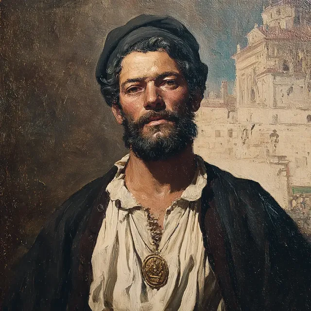

Rufus Dimitrious, a Greek sailor turned rogue of the Secret Service, is a man of many layers, known by the distinctive half-cape of sailcloth he wears and by a past bound up with the independence movement. These days he steers the murky business of smuggling and its logistics, a trade he plies with discretion, and never more so than amidst the polite gatherings of his betters. At a dinner given at Thymbra Farm, Rufus Dimitrious was presented by Frank Calvert as a trusted coastal guide — a tidy fiction to veil his deeper part in less lawful work.
As the evening wore on, Rufus Dimitrious gave close ear to the talk of the notable guests, General Patrice de MacMahon and Osman Hamdi Bey amongst them, who traded their commendations back and forth. When the meal was done he took a quiet payment of fifty gold from Frank Calvert for the arranging of smuggling routes and the scouting of coastal coves. Sent to fetch Heinrich Schliemann at Calvert's bidding, Rufus Dimitrious sought to overhear a private word between Calvert and Schliemann, but a creaking floorboard betrayed him, and the door was shut in haste.
Later he regaled such guests as Sidra al-Najjar and Ahmet Yusuf with tall tales of hunting mermaids and riding leviathans, which were heard with a fitting want of belief. The following morning he shared a breakfast draught with General de MacMahon, the two of them nursing the previous night's excess; and their easy fellowship was cut short when a flowering tree nearby withered in an instant, casting its unquiet shadow over the scene.
An old hand at sea and at smuggling, Rufus Dimitrious keeps company with a band that numbers Ahmet Yusuf, Jean-Zera Mongé, Sidra al-Najjar, and Osman Hamdi Bey, with whom he is forever weighing the prospect of loot and of a smuggler's opportunity. During an enquiry at a farmhouse near Constantinople he coaxed a French general into laying a hand upon a colourless tree, though nothing came of it at once; and he brought word of something overheard touching "a hill and a key", hinting at its weight to the expedition.
In a bold scheme to enter a locked study, Rufus Dimitrious picked the lock clean, and found within shelves crowded with books, a marble bust of Homer, and a spare key hidden in the desk. His wanderings brought him to a cave, where he found a narrow crevice giving onto a hidden passage; and descending into a Serpent's hole he came upon a nest of valuables, a silver owl brooch amongst them, which by a clever turn he made over for a time into a living owl.
He fell in, too, with the sailors of a Non-Government Steamer, and there renewed his acquaintance with a Greek Captain out of his past, who warned him against a black-market fixer named Janus the Cut and counselled him to keep such dealings well clear of Osman Hamdi Bey. Later Rufus Dimitrious bore a crucial part in the facing of a wicked Shade aboard a ship, firing upon it from a doorway whilst his companions closed to the fight; and afterward he made no secret of his delight in their winnings, turning over the treasures of the Serpent's nest with Jean-Zera Mongé and arranging the sale of certain pieces to Osman Hamdi Bey.
A trusted go-between with friends in the underworld of Constantinople, Rufus Dimitrious moves easily through the city's social and political webs, carrying word and brokering exchange between the parties to many a clandestine business. He knows the criminal orders of the place, and has an old working acquaintance with men of influence such as Osman Hamdi Bey and the writer Chique Manu. Charged to deliver a ciphered letter, written in illusory script, to Jean-Zera Mongé's father, he saw the delicate news of the political moment carried in discretion; and he made an appointment with Chique Manu, the firmer to fix his place as the party's link to the men who matter in the city.